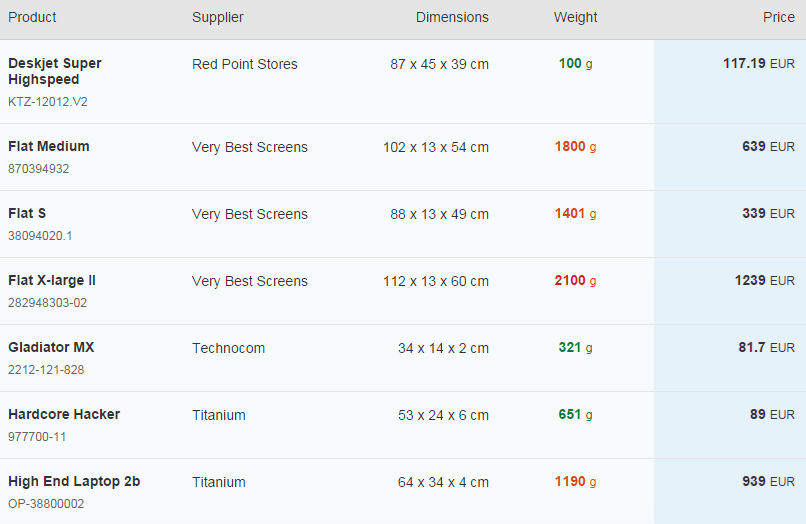

Table Design
The table design in OpenUI5 can be changed by using various table and column features, such as the pop-in design.
Pop-in Design
When displaying information in a pop-in, the information, typically a column header and the column (cell) content, can be displayed in an Inline or in a Block display style. The difference between these two can be seen in the following example.
<columns>
<Column
width="12em">
<Text text="Product" />
</Column>
<Column
popinDisplay: "Block"
minScreenWidth="Tablet"
demandPopin="true">
<Text text="Supplier" />
</Column>
<Column
popinDisplay: "Inline"
minScreenWidth="Tablet"
hAlign="End">
<Text text="Dimensions" />
</Column>
<Column
popinDisplay: "Inline"
minScreenWidth="Tablet"
demandPopin="true"
hAlign="Center">
<Text text="Weight" />
</Column>
<Column
hAlign="End">
<Text text="Price" />
</Column>
</columns>
The Dimension column is hidden, the Weight column is displayed in a pop-in when the screen size is smaller than a desktop. The Supplier is to be displayed in Block mode, with the header and content arranged vertically, whereas the two prices are to be displayed in Inline mode, with the header and content arranged next to each other.

Merging Duplicate Values
When you have repeated values in your table, you can use the mergeDuplicate feature of the sap.m.Column control. There are two properties that are related to merging duplicate values:
-
mergeDuplicates: Set this to true if you want duplicate values for the given column to be merged
-
mergeFunctionName: Use this to specify the name of the getter function of the control in the column
Duplicate values will only be merged if they are adjacent. This means that you should sort your data first before binding it.
Here's an example of how to use the mergeDuplicates feature. We'll set up a table of sales data and display the data in a table, merging any duplicate regions. When the Mix Up button is pressed to lightly shuffle the salesFigures array of objects, you will see that only adjacent duplicates are merged. Press the Sort button again to see the ideal merging.
<Table
headerText="Products"
items="{
path:'/ProductCollection',
sorter: {
path: 'SupplierName',
descending: false
}
}" >
<columns>
<Column mergeDuplicates="true">
<header>
<Text text="Supplier" />
</header>
</Column>
<Column mergeDuplicates="true">
<header>
<Text text="Product" />
</header>
</Column>
<Column
minScreenWidth="Tablet"
demandPopin="true"
hAlign="End" >
<header>
<Text text="Dimensions" />
</header>
</Column>
<Column
minScreenWidth="Tablet"
demandPopin="true"
hAlign="Center" >
<header>
<Text text="Weight" />
</header>
</Column>
<Column hAlign="End" >
<header>
<Text text="Price" />
</header>
</Column>
</columns>
<ColumnListItem>
<Text text="{SupplierName}" />
<ObjectIdentifier title="{Name}" text="{ProductId}" class="sapMTableContentMargin" />
<Text text="{Width} x {Depth} x {Height} {DimUnit}" />
<ObjectNumber
number="{WeightMeasure}" unit="{WeightUnit}"
state="{
path: 'WeightMeasure',
formatter: 'sap.m.sample.TableMergeCells.Formatter.weightState'
}" />
<ObjectNumber
number="{Price}"
unit="{CurrencyCode}" />
</ColumnListItem>
</Table>

Highlighting Rows and Columns
You can use CSS to achieve striping for table rows, as you might do in other web-based applications, for example to highlight alternate rows in the table above so that it looks like this:

You just need to note the ID of the sap.m.List or sap.m.Table control (in this case it is "salesdata") and then apply some appropriate CSS such as:
#ProductsView-ProductsTable tbody tr:nth-child(even) {
background: rgb(245, 245, 245);
}
It's also possible to highlight table columns by using the styleClass property of the sap.m.Column control. The value of this property is applied as a class to the whole column (header, cells and footer) and can be used in the following way: specify a class name for the styleClass property of your column, and set the style as you wish:
<style>
#products .MyPrice {
background: @sapUiNeutralBG;
}
</style>
...
<Column
hAlign="End"
class="myPrice">
<Text text="Price" />
</Column>
This highlights the Price column in our example table, as shown below:
